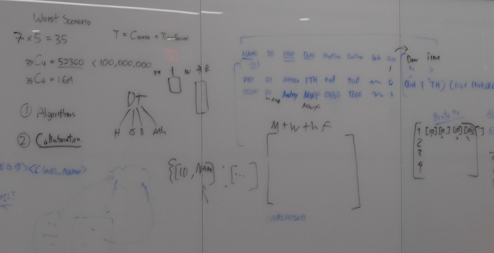

developed by
Gun Woo Kim | Samuel Grayson | Rhys Howell
(algorithm dev) | (web development) | (data
structure dev)
CS freshmen as of 2023 :)
github repo
https://github.com/closhu/unconflict
contacts
kimgunwo@grinnell.edu
graysons@grinnell.edu
howellrh@grinnell.edu
about the project

In October 11, we come up with a fun idea to compute best fit course schedules in order to ease students' life in Grinnell.
However, the actual development is postponed until October 23, when we realize it can't be delayed more.
GunWoo designs recursive backtracking approach to generate every possible course combinations with no time conflicts.
Then, Samuel proposes to display them according to user preference, including or excluding certain sections.
To see if two courses conflict in their time, a specific data structure has to be made.
This is handled by Rhys, who works on the data designing side. Rhys also works on developing some features of the program with GunWoo.
Finally, Samuel makes the initial python program to be a webside using Flask. The website is revised by GunWoo, who adds css styling to it.